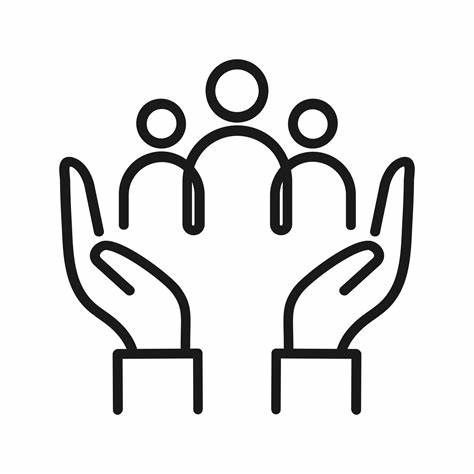

Reforçar a capacidade de todos os países

A meta 3.d dos Objetivos de Desenvolvimento Sustentável (ODS) da ONU destaca a necessidade de fortalecer a capacidade de todos os países, especialmente os em desenvolvimento, para o alerta precoce, redução de riscos e gerenciamento de riscos nacionais e globais de saúde. Este objetivo reconhece a importância de criar sistemas de saúde resilientes e prontos para enfrentar ameaças à saúde em todas as suas formas.
Aqui estão alguns aspectos-chave relacionados à meta 3.d:
Alerta Precoce: Implementar sistemas eficientes de alerta precoce é fundamental para identificar rapidamente surtos de doenças e outros eventos de saúde pública. Isso envolve o uso de tecnologias de monitoramento, redes de vigilância epidemiológica e a capacidade de responder prontamente a sinais de alerta.
Redução de Riscos: A abordagem de redução de riscos busca mitigar fatores que contribuem para a propagação de doenças e outros eventos adversos à saúde. Isso inclui medidas como o controle de vetores, promoção de práticas de higiene, gestão adequada de resíduos e o fortalecimento da infraestrutura de saúde.
Gerenciamento de Riscos: Ter estratégias robustas de gerenciamento de riscos é essencial. Isso implica a avaliação contínua dos riscos à saúde, o desenvolvimento de planos de contingência e a capacidade de coordenar uma resposta eficaz em caso de emergências.
Fortalecimento da Infraestrutura de Saúde: Investir na infraestrutura de saúde é crucial para garantir uma resposta eficaz a eventos de saúde pública. Isso inclui o fortalecimento de hospitais, laboratórios, sistemas de informação em saúde e a capacidade de fornecer cuidados de emergência.
Capacitação e Treinamento: O treinamento adequado do pessoal de saúde e de outros profissionais envolvidos na resposta a emergências é essencial. Isso garante que a força de trabalho esteja preparada para lidar com situações de crise.
Cooperação Internacional: A colaboração entre países e organizações internacionais é vital. O compartilhamento de informações, recursos e melhores práticas contribui para uma resposta mais eficaz a eventos de saúde global.
Abordagem Multissetorial: O gerenciamento eficaz de riscos à saúde requer uma abordagem multissetorial. Isso envolve a colaboração entre setores, como saúde, meio ambiente, agricultura e educação, reconhecendo que muitos fatores influenciam a saúde pública.
Inclusão de Comunidades Locais: Envolver as comunidades locais no processo de alerta precoce, redução de riscos e gerenciamento é crucial. Isso inclui a comunicação eficaz de informações de saúde, o empoderamento das comunidades para tomar medidas preventivas e a consideração das práticas culturais locais.
Ao fortalecer a capacidade dos países para o alerta precoce, redução de riscos e gerenciamento de riscos, a comunidade internacional trabalha para criar um ambiente global mais seguro e proteger a saúde das populações em todo o mundo. Essa abordagem é fundamental para enfrentar desafios imprevisíveis e garantir a resiliência dos sistemas de saúde em nível nacional e global.